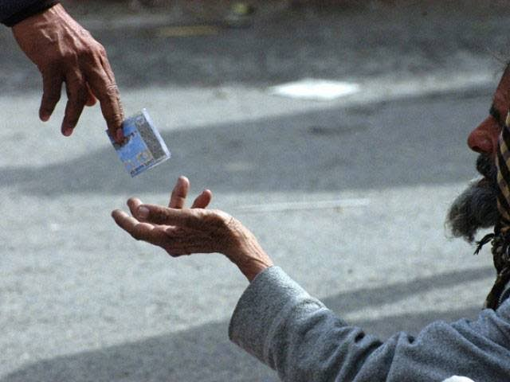
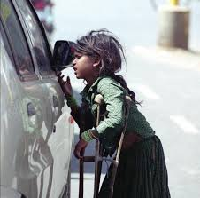

Street beggary across Pakistan's urban centers has shifted from a localized poverty byproduct into an aggressive, intergenerational informal economy. Families — including wives and children — operate at traffic signals, shrines, mosques, and educational gates, disrupting daily public life in nearly every city. This paper argues that traditional cash-handout models perpetuate a culture of dependency, and that a strategic shift toward state-managed human resource development is required instead.
1. The Contested Scale of the Beggar Economy

Quantifying Pakistan's begging population is genuinely difficult, and the figures that dominate public discourse should be treated with caution. A widely circulated claim — that Pakistan has 38 million beggars extracting Rs. 32 billion daily (roughly $42 billion annually) — traces back not to a verified Dawn report but to a reader's letter to the editor that went viral on social media in 2024; Dawn's own fact-checking desk later flagged the figure as misleading.
A more conservative and better-sourced estimate comes from the Asian Human Rights Commission, which places the beggar population at 5 to 25 million, or 2.5% to 11% of the total population. Even at the lower end, this represents a workforce larger than many of Pakistan's formal industrial sectors.
City-level daily-earning estimates (commonly cited as roughly Rs. 2,000 in Karachi, Rs. 1,400 in Lahore, and Rs. 950 in Islamabad) recur across multiple reports and are plausible in relative terms, though they too originate from informal surveys rather than a single authoritative census.
2. The Macroeconomic Deadweight & Standard of Living

Even taking the more conservative estimates, this is a cash economy that generates zero developmental indicators. Structurally, this dynamic causes real damage: the money circulates entirely outside the formal financial system, generating no tax revenue and no measurable productivity.
And because whatever is earned is consumed immediately or extracted by organized networks — the "Thekedar" system that recruiters and handlers operate in many cities — individual beggars see no upward mobility. Families remain without formal housing, sanitation, or literacy, regardless of how much moves through their hands day to day.
3. The Passive Welfare Trap
Pakistan currently allocates substantial fiscal resources toward direct financial aid — BISP being the largest, alongside private setups like Saylani Welfare Trust. These programs provide necessary short-term relief, but they function as a passive safety net: continuous cash transfers without a structural path into productive work risk entrenching, rather than resolving, long-term dependency.
4. Institutional Solution: The Agrarian Land-Lease Strategy
To address this, Pakistan should redirect a portion of its social-welfare spending away from passive aid and toward a one-time capital investment in agricultural infrastructure, through a comprehensive public policy driven by three sequential pillars:
Pillar A — Institutional Screening:
Using municipal and law-enforcement coordination, authorities should identify and register street beggars, distinguishing genuinely disabled or dependent individuals from able-bodied adults capable of labor.
Pillar B — The Agrarian Land-Lease Model:
The state could allocate parcels of arable public land on performance-linked, long-term leases to screened, rehabilitated individuals — converting an idle population into productive, eventually tax-paying agrarian labor.
Pillar C — Synergy with the Green Pakistan Initiative:
This workforce could be integrated into the state's official Green Pakistan Initiative framework.[3] This strategy channels participants into corporate farming and environmental restoration projects, supported by vocational centers, shelters, schools for children, and ongoing mentorship tracking.
References
- ^ Dawn Fact Check. (2024). Evaluating Viral Social Media Claims on Pakistan's Informal Street Economy and Begging Figures. Dawn Media Group.
- ^ Asian Human Rights Commission (AHRC). (2023). Socioeconomic Stratification and Internal Migrant Labor Indicators in South Asia. Research Registry Paper.
- ^ Green Pakistan Initiative (GPI). (2024). National Framework for Agrarian Infrastructural Reallocation and Corporate Farming Practices. Government of Pakistan. Ministry of National Food Security.